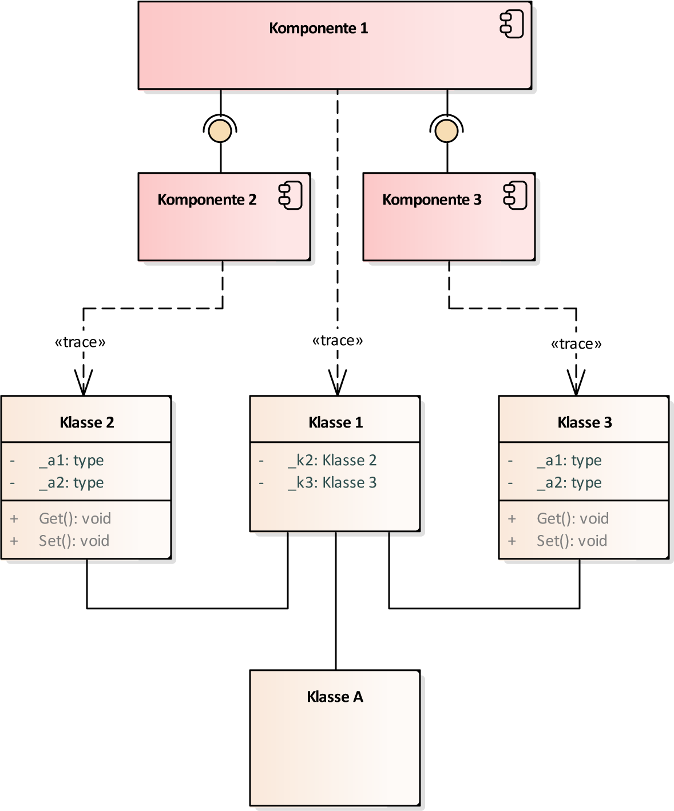

PSM-Layer
Ausgehend von den erkannten Softwarekomponenten ist eine Implementierung dieser erforderlich.
Plattformspezifische Modelle sind für die eigentliche Implementierung eines Systems unerlässlich,
wobei sich diese auf die Umsetzung des Softwaresystems, welches die Funktionalität gewährleistet,
bezieht. UML-Klassendiagramme helfen bei der Umsetzung eines konzeptionellen Systems und bilden
die Grundlage für die Implementierung in einer Programmiersprache. Mit der MDA ist es möglich,
ausgehend von einem logischen plattformunabhängigen Modell, unterschiedliche plattformspezifische
Modelle für verschiedene Programmiersprachen zu generieren. Abbildung 1 zeigt wie die überführung
von einem UML-Komponentendiagramm auf ein UML-Klassendiagramm zu erfolgen hat.
Erstellung des UML-Klassendiagramms

Abbildung 1: PIM-PSM Transformation.
Jede Komponente ist auf eine Klasse zu überführen, diese wird durch die Funktionalität "UML-Klassen Generieren" ermgölicht. Die Konnektivität zwischen UML-Komponenten und UML-Klassen erfolgt manuell durch Trace-Assoziationen.
Klassen, die aus Komponenten überführt worden sind, die einer Transformation des Stereotyps «controller block» unterliegen, müssen Klassenattribute abgeleiteter Systemkomponenten aufweisen.
Jede überführte Klasse kann Assoziationen zu einer oder mehreren Klassen aufweisen(siehe Klasse A). Assembly-Assoziationen zwischen Komponenten entsprechen den Assoziationen zwischen den überführten Klassen. Jede Klasse kann mehrere Attribute und Operationen aufweisen.